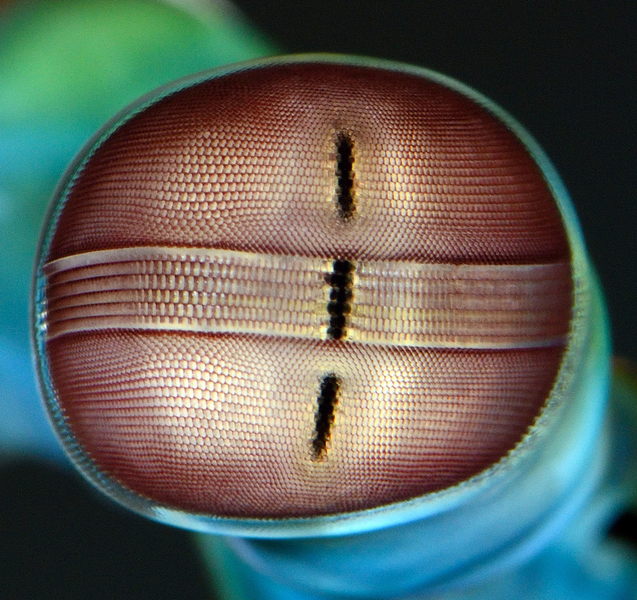
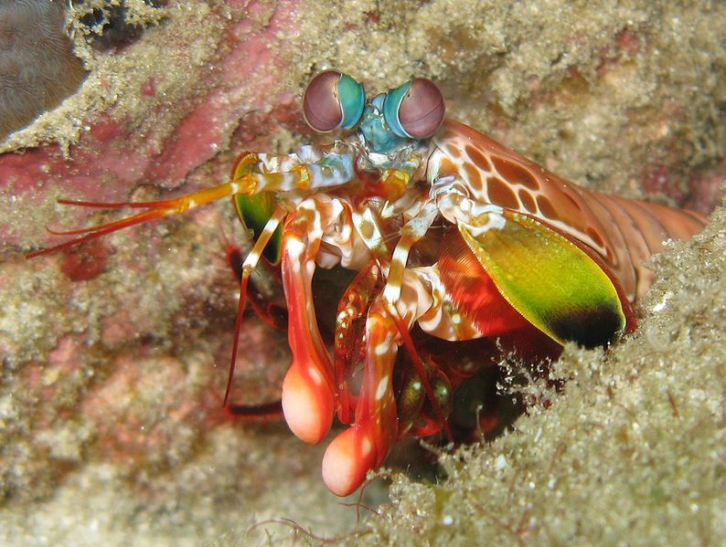

Fatos sobre o Stomatopoda
| Reino: Animalia |
|---|
| Filo: Arthropoda |
| Subfilo: Crustacea |
| Classe: Malacostraca |
| Subclasse: Hoplocarida |
| Ordem: Stomatopoda Latreille, 1817 |
Visão
Esses animais possuem o mais complexo sistema de visão de cores do mundo animal, pois enxergam 12 cores primárias, correspondentes aos 12 pigmentos distintos presentes em sua retina. Como cada cone pode ver cerca de 100 cores,os estomatópodes são capazes de ver 1024 cores, ou seja, 1 septilhão de cores. Em comparação, o olho humano vê 106 cores, ou seja, 1 milhão de cores apenas.
A visão dos estomatópodes é sensível à luz ultravioleta, mas ainda é desconhecido se ela pode distinguir a luz infravermelha.
Força
São capazes de desferir um dos mais rápidos e violentos golpes do reino animal, seu soco fora registrado com uma velocidade de 80 km/h e aceleração similar a uma arma calibre .22. A pressão exercida pelo soco é de 60 kg/cm². Essa força esmagadora é a responsável pelo seu título de "lagosta-boxeadora" e é capaz de facilmente quebrar a carapaça de um caranguejo, as conchas duras e calcificadas de gastrópodes ou até mesmo quebrar o vidro reforçado de um aquário.